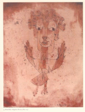

May 2002
Editorial
Articles
- Minor MattersQadri Ismail
- Disco-very: Anthropology, Nationalist Thought, Thamotharampillai Shanaathanan, and an Uncertain Descent into the OrdinaryPradeep Jeganathan
- “Amma, Do Not Weep” and “Yaman”Cheran
- Diaspora FlowChamindika Wanduragala & Pradeepa Jeevamanoharan
- “In God We Trust”: Hindutva’s War on TerrorRatna Kapur
- “But I Am Both”: Equality in the Context of Women Living under Parallel Legal Systems: The Problem of Sri LankaRamani Muttettuwegama
- Peace Process, the People and Civil SocietyJayadeva Uyangoda
- Lesbian Activism in Sri LankaWomen’s Support Group
- Give ’em Enough RopeKrisantha Sri Bhaggiyadatta
- Muslim on the PeripheryAmeena Hussein